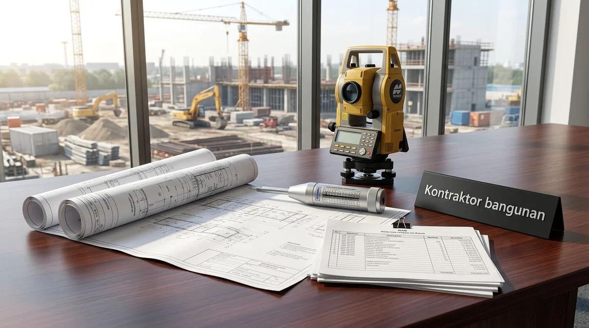

Komponen Utama Pembentuk Biaya Konstruksi di Pasuruan
Komponen biaya terdiri dari pekerjaan persiapan & tanah, pekerjaan struktur sipil, arsitektur finishing, utilitas MEP, serta perizinan legalitas daerah.
Berdasarkan benchmark proyek konstruksi Jawa Timur 2025/2026, berikut distribusi alokasi anggaran proyek:
- Pekerjaan Tanah & Pondasi (20-30%): Uji tanah geoteknik, perataan tanah (cut and fill), pemadatan tanah dasar subgrade, dan pondasi tiang pancang beton.
- Pekerjaan Struktur Utama (30-40%): Struktur beton bertulang atau rangka portal baja WF SNI, plat lantai dak bondek, dan rangka atap.
- Pekerjaan Arsitektur & Penutup (20-25%): Dinding bata ringan, plester aci, kusen aluminium, lantai granit/floor hardener, dan atap spandek berinsulasi.
- Pekerjaan Utilitas MEP & Lingkungan (15-20%): Jaringan kabel listrik daya, penerangan industri LED, instalasi pipa air bersih/kotor, hidran kebakaran, dan drainase.
Simulasi Estimasi Biaya Pekerjaan Infrastruktur & Jalan Kawasan di Pasuruan
Pekerjaan infrastruktur pendukung meliputi perkerasan jalan rigid beton, saluran drainase U-ditch, dan pagar panel pracetak.
Berikut rincian estimasi biaya pekerjaan infrastruktur sipil standar kawasan di Pasuruan:
1. Perkerasan Jalan Beton Rigid Pavement (K-350 Tebal 20 cm)
Spesifikasi: Hamparan makadam/agregat tebal 15 cm + plastik cor + wiremesh M8 + beton ReadyMix K-350 finishing grooving. Estimasi Biaya: Rp420.000 – Rp580.000 per m².
2. Saluran Drainase Pracetak (U-Ditch + Cover Heavy Duty)
Spesifikasi: Pemasangan U-Ditch ukuran 60x60 cm hingga 80x80 cm lengkap dengan tutup plat beton menahan beban truk tronton. Estimasi Biaya: Rp650.000 – Rp1.100.000 per meter lari (m1).
3. Pagar Panel Beton Pracetak (Tinggi 2.4 – 3.0 Meter)
Spesifikasi: Tiang kolom H-Beam beton + daun panel tebal 5 cm + kawat duri 4 lajur anti-maling. Estimasi Biaya: Rp380.000 – Rp550.000 per meter lari (m1).

Proses pengecoran jalan beton rigid pavement dan instalasi saluran drainase pracetak U-Ditch di Pasuruan.
Tabel Komparasi Biaya Pembangunan Berdasarkan Jenis Bangunan di Pasuruan
Tabel komparasi menyajikan rentang estimasi biaya per meter persegi, sistem struktur utama, dan durasi pengerjaan untuk berbagai jenis konstruksi di Pasuruan.
| Jenis Bangunan / Proyek | Estimasi Biaya / m² | Sistem Struktur Utama | Estimasi Durasi Pengerjaan |
|---|---|---|---|
| Gudang Logistik / Workshop | Rp2.500.000 – Rp3.300.000 | Rangka Baja WF SNI + Plat Lantai K-300 | 3 – 5 Bulan |
| Gedung Perkantoran / Ruko | Rp3.500.000 – Rp4.800.000 | Beton Bertulang K-250 + Fasad Kaca ACP | 4 – 7 Bulan |
| Bangunan Pabrik Manufaktur | Rp3.600.000 – Rp5.200.000 | Baja WF Heavy + Lantai Hardener K-350 | 5 – 8 Bulan |
| Perumahan Residensial (Kavling) | Rp3.200.000 – Rp4.500.000 | Pasangan Bata Ringan + Rangka Baja Ringan | 3 – 5 Bulan |
| Fasilitas Dingin (Cold Storage) | Rp5.000.000 – Rp7.500.000 | Panel Insulasi PUF + Lantai Anti-Frost | 4 – 6 Bulan |
- Pilih Material Precast untuk Saluran & Pagar: Memakai U-Ditch dan Pagar Panel beton cetak pabrik menghemat waktu kerja hingga 60% dibandingkan cor manual di lokasi proyek.
- Jadwalkan Pekerjaan Tanah pada Musim Kering: Pekerjaan galian dan pemadatan tanah pada musim kemarau (April–Oktober) jauh lebih cepat dan menghemat biaya sewa pompa air serta perbaikan tanah becek.
- Terapkan Skema Borongan Total (Turnkey Contract): Skema borongan penuh melindungi pemilik proyek dari risiko lonjakan harga material semen, besi, dan BBM selama masa konstruksi berlangsung.
Pertanyaan yang Sering Diajukan (FAQ)
Kesimpulan Praktis
Transparansi anggaran, ketepatan jadwal kurva S, dan kepatuhan standar mutu teknis adalah kunci keberhasilan proyek konstruksi di wilayah Pasuruan. Hubungi tim estimator kami untuk konsultasi dan survei gratis.